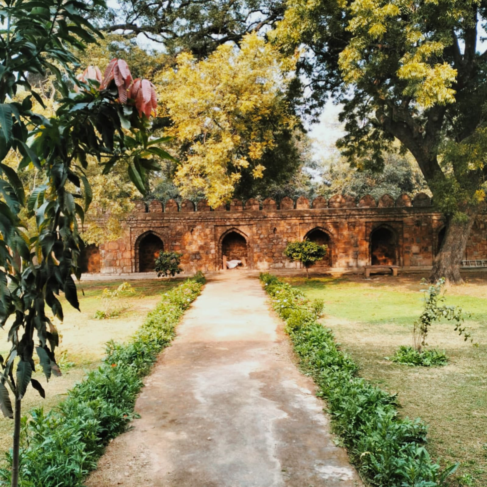

- 
Lodhi Garden
In New Delhi, India, there is a city park called Lodi Gardens. The complex, which spans 90 acres (360,000 m2), is home to several notable architectural structures from the 15th century, including Mohammed Shah's Tomb, Sikandar Lodi's Tomb, Shisha Gumbad, and Bara Gumbad. The Lodis were a powerful group that ruled parts of modern-day Pakistan and Punjab, as well as parts of northern India, between 1451 and 1526. The Archaeological Survey of India (ASI) is currently in charge of protecting the site.Lodi Gardens is well-liked by those who enjoy strolling and working out.The gardens are a well-liked location for morning strolls among Delhi residents and are located on Lodi Road between Khan Market and Safdarjung's Tomb.
The Bara Gumbad ("Big Dome"), located in the center of the gardens, is a massive dome made of rubble that was built as an entryway to either a large walled enclosure or the associated three-domed masjid (mosque). It is not a tomb. During the reign of Sikander Lodi in 1494, the Bara Gumbad and the mosque were constructed. Additionally, there is a dwelling encircling a central courtyard that has the remnants of a water tank. The Shisha Gumbad, often known as the "mirror dome" due to the glazed tiles used in its construction, is located across from the Bara Gumbad. It has graves whose occupants are unclear (perhaps Bahlul Lodi or an unidentified family from Sikandar Lodi's court).
- To the north of the garden are the remains of a stream which may once have run as far as the Yamuna River, and by its side is the Tomb of Sikandar Lodi
- Glass garden: The park has a glass garden with a bonsai park and a rose garden.
- Athpula bridge: The Athpula bridge is an architectural marvel built during the reign of Akbar. It spans the waterways and connects the western and eastern parts of the garden.